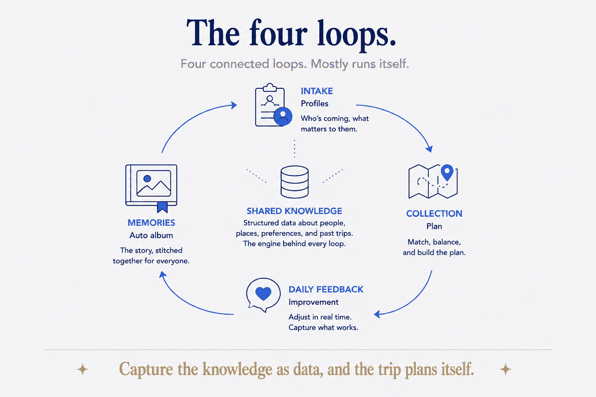

The system, and the two trips it ran
Most of what I build, I build for my own life first — it's the fastest way to prove a thing works before it's anyone else's problem. My trip planner started as a private tool for travelling with my sister: feed it what we like, what we'd skip, where we've already been, get back a plan shaped around us instead of a generic itinerary off a blog.
It's not a mockup. It has run two real trips end to end: a shared 8-day Sicily trip (55 activities across 19 places, 1,128 photos) and an 18-day trip through the Verdon in France (91 activities, 69 places). Under the hood it scores destinations by affinity to what's actually liked, and it derives exclusions automatically — it already knows the 642 places across 29 countries we've been, so it stops suggesting them. That's the engine.
And once you've built that engine for a pair, the realization is unavoidable: this is a job a lot of people do. Every tour leader, retreat organizer, and person who got volunteered to plan the family reunion is doing this same task — juggling a dozen people's preferences — in their head or a doomed spreadsheet. Play personally, prove the block, apply it to the job.
The job, as it's done now
Picture the host of a ten-person trip. In their head, or scattered across a WhatsApp group and a Notes file, is this:
- One person is a terrible sleeper and needs a quiet room.
- Two are vegetarian; one of those is actually coeliac.
- Someone's knee means no long hikes.
- Two have already been to this city and would riot at another cathedral tour.
- One quietly loves markets; one quietly hates them.
The host holds all of this loosely, forgets half of it, and plans a trip that's fine — a compromise nobody chose. And next trip, it all starts from zero, because none of that knowledge was ever captured as anything. It lived in their memory and evaporated.
That's not a planning problem. It's a structure problem. The knowledge exists; it just has no shape.
What structure does to the job
Give that same job a deliberate structure and it transforms into four loops that mostly run themselves.
1. Intake becomes structured profiles. Instead of preferences leaking into a chat thread, each participant fills in a simple form: what they're into, what they'd rather not do, and their constraints — diet, mobility, sleep, anything medical worth knowing, budget. The key move is treating an anti-interest as a real thing: not a soft "meh" but a veto. "No museums" should kill the museum suggestion, however well it scored. Now the host has one clean profile per person instead of a memory palace.
2. The collection becomes a better plan. With the group's profiles as data, the itinerary gets shaped by the aggregate: activities ranked by how much the group as a whole would enjoy them, anti-interests filtered out, constraints honored automatically — the room list already knows about the light sleeper, the restaurant list already knows about the coeliac. The host isn't guessing at a compromise; the structure computes one.
3. Daily feedback makes the trip learn. A one-tap form each evening — how was today? — feeds back in, and tomorrow flexes to match. The trip improves while it's happening instead of the host reading the room and hoping. Most trips are static plans that survive contact with reality poorly. This one adjusts.
4. Memories assemble themselves. Photos from everyone pool into a structured, day-by-day group album, and a shared online photobook builds itself from it. The shared memory — usually the thing one exhausted person cobbles together weeks later, or nobody does — becomes an automatic byproduct of the trip having had structure in the first place.

Show the machinery: one loop, concretely
Take loop 2 — turning the collection of preferences into a plan — because it's the one people assume needs magic and it doesn't. Here's what actually happens in my version:
- Preferences become scored signals. Each person's likes and dislikes load as weighted signals, not prose. An anti-interest isn't a low score — it's a hard exclusion. "No museums" doesn't rank museums low; it removes them.
- Been-there is derived, not typed. The planner reads every place already visited straight from trip history — those 642 places — and filters them out automatically. Nobody maintains a "don't suggest again" list; the structure knows.
- Options rank by affinity. What's left gets scored against what the group actually likes, and the top of that ranked list is the itinerary skeleton. For a pair it ranks a couple's shared taste; the only change for a group is that the signals come from ten intake forms instead of two.
That last point is the whole generalization: the machinery that plans for two plans for ten by feeding it ten profiles instead of two. Nothing new has to be invented — the pair version already scores, excludes, and ranks. A group is just more inputs to the same loop. I trust it because I've watched it run on real trips, not because it demos well.

The honest hard part
Two things I won't wave away.
Consent and care. The moment you collect ten people's dietary, mobility, and medical details, you've taken on something sensitive. That has to be handled deliberately — explicit consent, a clear promise about what happens to the data, and no leakage. But here's the thing: handling it with visible structure and care isn't a burden, it's part of the offer. "Your group's needs, captured properly and treated respectfully" is a better promise than "I'll try to remember."
Structure serves the human, not the reverse. The goal isn't a trip optimized to death by an algorithm. It's a host freed from juggling logistics in their head so they can do the part that's actually theirs — presence, judgment, hospitality. The structure carries the load that shouldn't have been in a human's memory anyway, so the human can be human.
What a host can take from this
The pattern is portable, and any thoughtful host can start moving toward it with a good intake form and one discipline: treat the answers as data, not chat. Capture interests, anti-interests, and constraints as structured fields; shape the plan from the collection instead of your memory; let a nightly one-tap form adjust tomorrow; let the shared album assemble itself. You don't need my engine to begin — you need to stop holding ten people's needs in your head and start holding them in a shape.
The harder, realer thing is a whole participant-intelligence system standing behind a specific host's specific group — intake, scoring, the daily loop, the album, and the consent and care that sensitive data demands — tuned and actually run. That's the part that isn't a form; it's an architecture applied to a job.
But notice what it does when it works: it doesn't optimize the trip to death, it frees the host. The logistics that never should have lived in a human's memory move into structure, and the host gets to spend their attention on the part that was always theirs — presence, judgment, hospitality. That's the quiet promise of applying this anywhere: structure carries what shouldn't have been in your head, so you can do the human part. Here, it means a trip that plans itself around everyone at once — and a host who's actually on the trip.